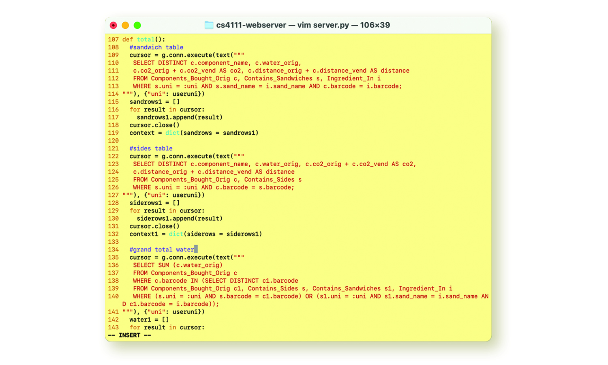
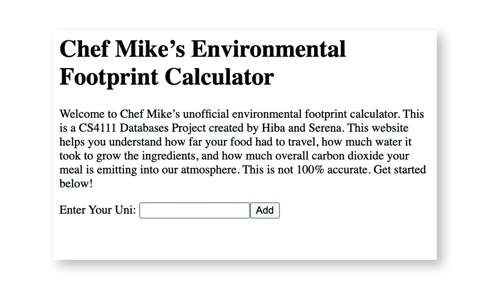

Chef Mike’s Sub Shop is a sandwich-counter-style dining hall at Columbia serving up some of the fattest subs known to man. With my partner Hiba Shaalan, we created a database that helps diners calculate the environmental impact of their meal by storing information about Chef Mike’s offerings (including toppings, premade sandwich options, and sides) alongside each component’s water usage and carbon footprint. We then created a simple web front end that uses Flask and the Python SQLAlchemy package to connect to the database. In this web app, users can log in with their school ID and build a meal. This was a project for COMS4111 Introduction to Databases.
POSTGRESQL, PYTHON + SQLALCHEMY + FLASK, HTML + JINJA